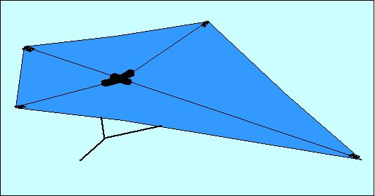
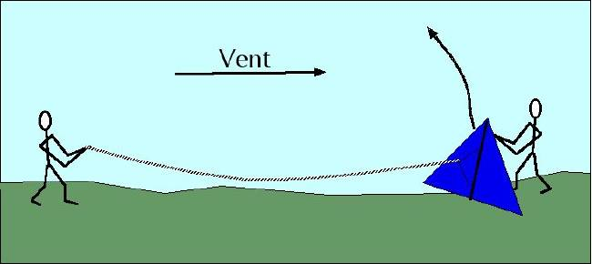
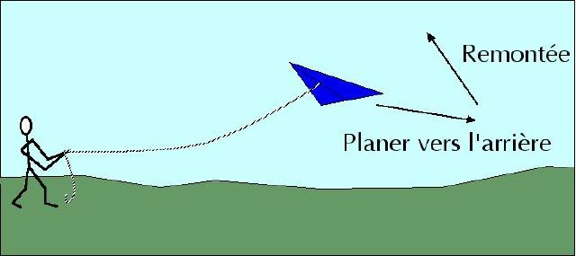
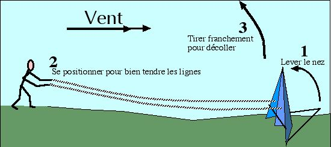
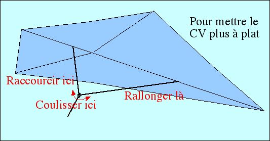

Se débrouiller avec un cerf-volant
Bien commencer
Pour monter un cerf-volant (CV) acheté, plusieurs impératifs :
• Les BAGUETTES doivent être AU-DESSUS de la toile, pour les monofils.
• La ou les BRIDES doivent être AU-DESSOUS du CV.
• S'il existe un raccord central coudé (Eddy, CV en losange par exemple), il faut que le COUDE SOIT TRANSVERSAL et que les ailes REMONTENT VERS LES CÖTÉS.

Lancer un CV monofil
• Le vent est suffisant : le CV décolle directement de votre main. Déroulez vite du fil pour le sortir des turbulences du sol.
• Le vent au sol est faible, des obstacles (arbres, etc.) le coupent : faites tenir le CV par une personne face au vent. Éloignez-vous dans la direction d'où vient le vent en déroulant une vingtaine de mètres de fil. Vent dans le dos, ramenez la ligne de façon continue pour faire monter le CV assez haut.

• Dans cette position, si le CV a du mal à tenir faute de vent, essayez de le faire monter encore plus haut pour trouver plus de vent par la manoeuvre suivante :
1) Relâchez du fil presque sans résister en laissant le CV planer à plat vers l'arrière.
2) Rembobinez assez rapidement pour faire remonter le CV. Et recommencez si besoin...

Lancer un CV pilotable (2 lignes)
• Montez le CV, posez le dos au sol, la pointe en direction du vent. Même les champions font comme ça. Vous pouvez faire tenir le CV par quelqu'un, mais vous finirez par vous disputer ou le lasser, et puis c'est à vous de vous débrouiller... Attachez les 2 lignes aux brides.
• Éloignez-vous dans la direction d'où vient le vent en déroulant les lignes. Important : déroulez le maximum possible et non le minimum : vous pourrez faire des virages plus larges et vous aurez plus de temps pour rattraper les fausses manoeuvres.

• Placez-vous dos au vent, penché en avant, les bras tendus, les lignes tendues juste assez pour relever le CV.
• Tirez en amenant les bras derrière vous et en reculant si besoin en fonction de la force du vent. Montez tout droit pour prendre de la sécurité. Puis essayez d'aller de droite et de gauche avec des virages d'amplitude croissante, jusqu'à savoir faire des huits. Inutile d'écarter les mains et les bras : le CV ne réagit qu'à la TRACTION sur les lignes ; gardez les mains basses devant vous. Si le vent est faible, essayez de ne jamais arrêter le mouvement du CV.
• Plus tard, revenez au centre, assez haut, tirez sur une ligne et maintenez : le CV fera un tour complet ! Bravo ! Et vous pouvez continuer à le piloter comme avant, même s'il a fait plusieurs tours ! Pour le prendre bien en main par la suite, essayez surtout de faire des carrés bien nets, c'est le plus formateur.
Réglage, pour tous les CVs
• Si au décollage votre CV ne veut pas monter voire recule, il faut le basculer vers l'avant, soit en raccourcissant la bride avant, soit en allongeant la bride arrière, soit en faisant coulisser vers l'avant l'attache de la ligne. Sur les pilotables, il existe en général un anneau métallique sur lequel un noeud en "tête d'alouette" permet de raccourcir la bride avant en rallongeant l'arrière latérale, ou l'inverse.

Construire un CV (voir plans Eddy et Rokkaku )
Pour la stabilité, un dièdre transversal est en général nécessaire (voir dessin du haut). Il peut être obtenu par un raccord coudé, par un fil tendu entre les pointes d'ailes, ou en courbant la vergue transversale (à chaud, pour le bambou).
Il est bon aussi d'avoir une légère courbure longitudinale mais celle-ci est en général obtenue naturellement par l'action du vent sur la toile.
Une queue favorise la stabilité. Elle sera plus efficace si elle est séparée du CV par un fil assez long.
En tous les cas
• Volez loin des lignes électriques et jamais par temps d'orage.
• Ne volez pas au-dessus d'autres personnes ou de routes, surtout si vous êtes débutant et surtout avec un cerf- volant pilotable.
• Si votre ligne s'emmêle avec une autre, ne tirez pas, vous pourriez couper l'une ou l'autre. Rapprochez-vous de l'autre cervoliste et démêlez.